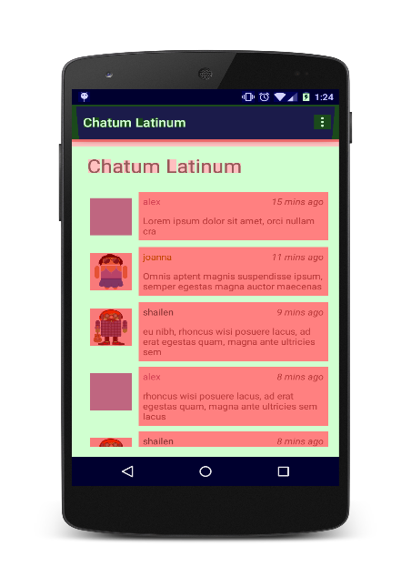
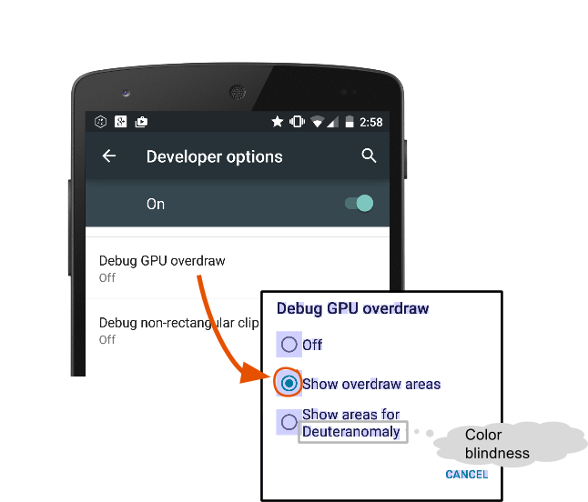
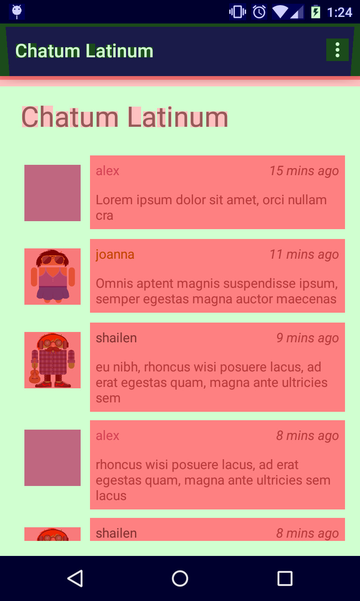
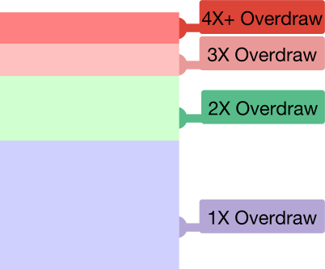
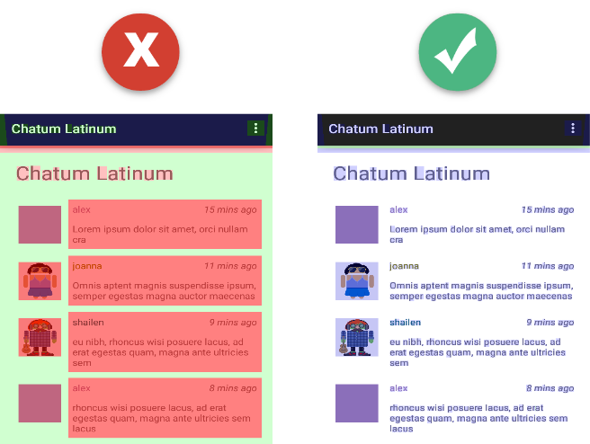

If your Android app is slow, it could be because some frames take more than 16 milliseconds to execute. One possible reason is that your app is drawing each pixel way more often than is necessary; that is, more than once. Turning on Debug GPU Overdraw on your mobile device gives you a quick and easy way to see where your app is doing unnecessary drawing work.
This walkthrough shows how to visualize overdraw on your mobile device by color-coding interface elements based on how often they are drawn.
Visualizing overdraw is useful for:
- Showing where an app might be doing more rendering work than necessary.
- Helping you see where you might be able to reduce rendering overhead.
What You Need
A mobile device running at least Android 4.1 with Developer Options enabled.
Open Developer options in the system Settings. On Android 4.2 and higher, the Developer options screen is hidden by default. To make it visible, go to Settings > About phone and tap Build number seven times. Return to the previous screen to find Developer options at the bottom.
What You’ll Learn
- How to enable Debug GPU Overdraw on your mobile device.
- How to interpret the delirium colors produced by Debug GPU.

- On your mobile device, go to Settings and tap Developer Options.
- Scroll far down until you see Debug GPU Overdraw.
- Enable Debug GPU Overdraw.
- In the Debug GPU overdraw popup select Show overdraw areas.

Switch back to your application, and don't panic as your screen turns into a delirium of colors!
This is working as intended.

The colors are hinting at the amount of overdraw on your screen for each pixel, as follows:
- True color: No overdraw
- Blue: Overdrawn once
- Green: Overdrawn twice
- Pink: Overdrawn thrice
- Red: Overdrawn four or more times

Some overdraw is unavoidable. As you are tuning your app’s user interface, the goal is to arrive at a visualization that shows mostly true colors and 1X blues.
Once you identify where your app is missing the 16 ms-per-frame mark, you can use other Android Performance Profiling Tools to figure out, where exactly in your code the problem is, and fix it.
In fact, we have created a whole Udacity course to help you learn about Android Performance, the profiling tools, and how to fix common issues.

Keep calm, profile, and stay under 16 mspf.
- Sign up for the Android Performance Udacity Course.
- Check out the Android Performance Patterns video series.
- Join the Android Performance Patterns Google+ Community.
- Find more tools in the Android Performance Tools documentation.